유지 가능 — 낮은 점액 띠·방울·우측 전개가 읽힌다. 워터실드/너울이는 강의 물질층과 비교해 코어·중간톤 분리가 있다. 마지막 잔류는 사용자 판단으로 보존.
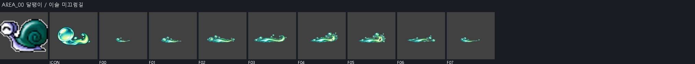
- 핵심 소재: 바닥을 얇게 타고 흐르는 이슬 점액 띠와 둥근 물방울. ‘달팽이 / 이슬 미끄럼길’ 전용 소재이며 몬스터 본체는 VFX에 직접 넣지 않음
- 진행 방향: 바닥을 얇게 타고 흐르는 이슬 점액 띠와 둥근 물방울의 긴 축이 오른쪽으로 미끄러지듯 늘어나고 끝부분 물방울만 뒤따라 소멸
- 아이콘 핵심 모티브: 대표 실루엣 1개는 ‘큰 이슬방울’, 보조 효과 1개는 ‘낮게 미끄러지는 점액 꼬리’. 64px 축소에서도 두 형상의 겹침과 방향이 읽혀야 함
- VFX: 8 frames, 각 384×384 RGBA PNG, 약 0.10 sec/frame
수정 필요 — 소재와 보호막 동작은 맞지만 F03~F05의 상단 반사광/별빛 및 하단에 막대·사각형 투명 구멍이 보인다. 검정 배경에서는 검은 오염처럼 보이나 회색 배경에서 뚫린 영역을 확인. 주변 하이라이트를 보존하며 알파/원화 복구 필요. 생성 원인 자체는 미확인.
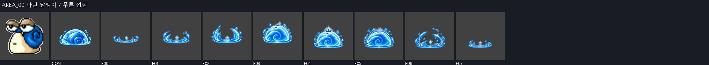
- 핵심 소재: 겹친 껍질 결을 닮은 반원형 보호막과 짧은 반사광. ‘파란 달팽이 / 푸른 껍질’ 전용 소재이며 몬스터 본체는 VFX에 직접 넣지 않음
- 진행 방향: 겹친 껍질 결을 닮은 반원형 보호막과 짧은 반사광이 아래에서 위로 감싸며 1회 맥동한 뒤 같은 중심에서 소멸하고 화면을 횡단하지 않음
- 아이콘 핵심 모티브: 대표 실루엣 1개는 ‘푸른 껍질 아치’, 보조 효과 1개는 ‘흰 반사광’. 64px 축소에서도 두 형상의 겹침과 방향이 읽혀야 함
- VFX: 8 frames, 각 256×256 RGBA PNG, 약 0.10 sec/frame
유지 가능 — 압축→우측 돌진→충돌광→파편 순서가 보이며 붉은 껍질 모티브가 일관된다. 스크류 펀치의 방향성 참고와 양립.
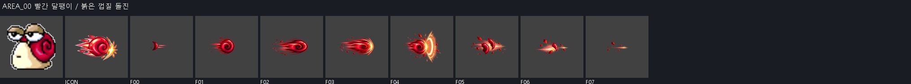
- 핵심 소재: 붉은 껍질 원반이 전방으로 압축되는 돌진 잔상과 충돌광. ‘빨간 달팽이 / 붉은 껍질 돌진’ 전용 소재이며 몬스터 본체는 VFX에 직접 넣지 않음
- 진행 방향: 붉은 껍질 원반이 전방으로 압축되는 돌진 잔상과 충돌광이 오른쪽으로 압축·가속하고 충돌점에서 짧게 넓어진 뒤 반대 방향 파편 없이 소멸
- 아이콘 핵심 모티브: 대표 실루엣 1개는 ‘붉은 껍질 원반’, 보조 효과 1개는 ‘전방 속도선’. 64px 축소에서도 두 형상의 겹침과 방향이 읽혀야 함
- VFX: 8 frames, 각 256×256 RGBA PNG, 약 0.10 sec/frame
유지 가능 — 낮은 진주 고리·무지개 파동이 단계적으로 확장/분해된다. 검토한 이번 ZIP에서 과거 F05~F07 절단을 재현하지 못함. ICON의 세부 장식은 많지만 중심 고리 식별 가능.
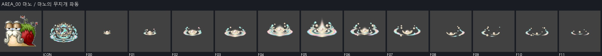
- 핵심 소재: 진주빛 껍질 고리에서 번지는 낮은 무지개 파동. ‘마노 / 마노의 무지개 파동’ 전용 소재이며 몬스터 본체는 VFX에 직접 넣지 않음
- 진행 방향: 진주빛 껍질 고리에서 번지는 낮은 무지개 파동이 중심에서 방사 또는 수직으로 확장하고 절정 뒤 파편은 원점으로 되감기지 않음
- 아이콘 핵심 모티브: 대표 실루엣 1개는 ‘진주 껍질 고리’, 보조 효과 1개는 ‘무지개 파문’. 64px 축소에서도 두 형상의 겹침과 방향이 읽혀야 함
- VFX: 12 frames, 각 512×512 RGBA PNG, 약 0.08 sec/frame
유지 가능 — 탄성 점액과 반사광이 명확하며 몬스터 몸통 직접 삽입 없음. F07 덩어리 복원은 기존 사용자 판단 항목; 완전 fade 통과로 간주하지 않음.
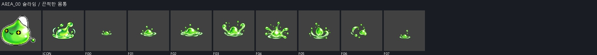
- 핵심 소재: 탄성 있는 점액 방울과 눌렸다 되튀는 젤리 테두리. ‘슬라임 / 끈적한 몸통’ 전용 소재이며 몬스터 본체는 VFX에 직접 넣지 않음
- 진행 방향: 탄성 있는 점액 방울과 눌렸다 되튀는 젤리 테두리의 고유 결을 따라 한 번 확장·수축하며 불필요한 화면 횡단은 하지 않음
- 아이콘 핵심 모티브: 대표 실루엣 1개는 ‘점액 방울’, 보조 효과 1개는 ‘탄성 튐선’. 64px 축소에서도 두 형상의 겹침과 방향이 읽혀야 함
- VFX: 8 frames, 각 256×256 RGBA PNG, 약 0.10 sec/frame
유지 가능 — 청록 점액과 얇은 지면 이동은 명세에 맞는다. AREA00보다 ICON 방울이 작고 꼬리가 길다. 공통 스킬의 최종 대표본 통일 여부는 별도 결정.
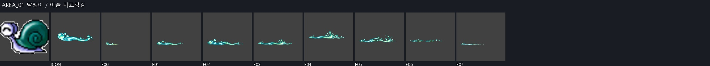
- 핵심 소재: 바닥을 얇게 타고 흐르는 이슬 점액 띠와 둥근 물방울. ‘달팽이 / 이슬 미끄럼길’ 전용 소재이며 몬스터 본체는 VFX에 직접 넣지 않음
- 진행 방향: 바닥을 얇게 타고 흐르는 이슬 점액 띠와 둥근 물방울의 긴 축이 오른쪽으로 미끄러지듯 늘어나고 끝부분 물방울만 뒤따라 소멸
- 아이콘 핵심 모티브: 대표 실루엣 1개는 ‘큰 이슬방울’, 보조 효과 1개는 ‘낮게 미끄러지는 점액 꼬리’. 64px 축소에서도 두 형상의 겹침과 방향이 읽혀야 함
- VFX: 8 frames, 각 384×384 RGBA PNG, 약 0.10 sec/frame
유지 가능 — 보호막 상승·맥동·소멸, 물질층과 ICON 연결이 명확하다. AREA00과 소재 언어는 같으나 파일/세부 형태는 다른 후보.
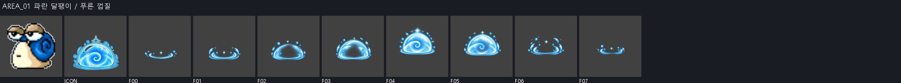
- 핵심 소재: 겹친 껍질 결을 닮은 반원형 보호막과 짧은 반사광. ‘파란 달팽이 / 푸른 껍질’ 전용 소재이며 몬스터 본체는 VFX에 직접 넣지 않음
- 진행 방향: 겹친 껍질 결을 닮은 반원형 보호막과 짧은 반사광이 아래에서 위로 감싸며 1회 맥동한 뒤 같은 중심에서 소멸하고 화면을 횡단하지 않음
- 아이콘 핵심 모티브: 대표 실루엣 1개는 ‘푸른 껍질 아치’, 보조 효과 1개는 ‘흰 반사광’. 64px 축소에서도 두 형상의 겹침과 방향이 읽혀야 함
- VFX: 8 frames, 각 256×256 RGBA PNG, 약 0.10 sec/frame
유지 가능 — 베이지 포자 세 덩이와 연두 입자가 성장 후 흩어진다. 포이즌 미스트처럼 기체의 농도 차이가 남고 독색/몬스터 본체를 복제하지 않음.
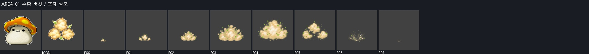
- 핵심 소재: 작은 포자 구름 세 덩이와 부드럽게 흩어지는 점 입자. ‘주황 버섯 / 포자 살포’ 전용 소재이며 몬스터 본체는 VFX에 직접 넣지 않음
- 진행 방향: 작은 포자 구름 세 덩이와 부드럽게 흩어지는 점 입자이 중심에서 방사 또는 수직으로 확장하고 절정 뒤 파편은 원점으로 되감기지 않음
- 아이콘 핵심 모티브: 대표 실루엣 1개는 ‘버섯 포자구름’, 보조 효과 1개는 ‘세 점 확산’. 64px 축소에서도 두 형상의 겹침과 방향이 읽혀야 함
- VFX: 8 frames, 각 384×384 RGBA PNG, 약 0.10 sec/frame
보정 권장 — 버섯갓 충격과 후반 포자 덩어리는 맞지만 F03~F06의 입자성 황금광이 불꽃 폭발처럼도 읽힌다. 포자 중간톤/둥근 덩어리를 더 남기고 코어광만 제한 권장. INPUT 자체가 황갈+황금이므로 전면 색 교체 사유는 아님.
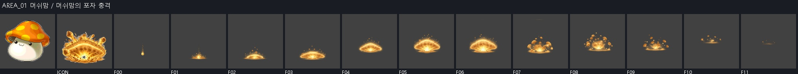
- 핵심 소재: 굵은 포자 핵이 지면에 닿아 버섯갓 모양으로 터지는 충격. ‘머쉬맘 / 머쉬맘의 포자 충격’ 전용 소재이며 몬스터 본체는 VFX에 직접 넣지 않음
- 진행 방향: 굵은 포자 핵이 지면에 닿아 버섯갓 모양으로 터지는 충격이 중심에서 방사 또는 수직으로 확장하고 절정 뒤 파편은 원점으로 되감기지 않음
- 아이콘 핵심 모티브: 대표 실루엣 1개는 ‘버섯갓 충격파’, 보조 효과 1개는 ‘굵은 포자 파편’. 64px 축소에서도 두 형상의 겹침과 방향이 읽혀야 함
- VFX: 12 frames, 각 512×512 RGBA PNG, 약 0.08 sec/frame
유지 가능 — 상아 쐐기·갈색 갓·단단한 면 분리가 명세 ICON 모티브와 일치. 실제 몬스터의 청회색과 차이는 INPUT에 지정된 갈색에서 비롯됨.
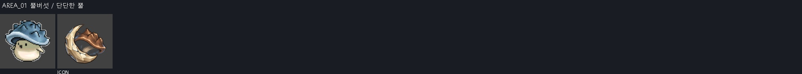
- 핵심 소재: 짙은 갓을 감싼 단단한 뿔 쐐기와 짧은 금속성 반짝임. ‘뿔버섯 / 단단한 뿔’ 전용 소재이며 몬스터 본체는 VFX에 직접 넣지 않음
- 진행 방향: 짙은 갓을 감싼 단단한 뿔 쐐기와 짧은 금속성 반짝임의 대표 결만 바깥으로 8~15% 맥동하고 이동 궤적은 만들지 않음
- 아이콘 핵심 모티브: 대표 실루엣 1개는 ‘상아 뿔’, 보조 효과 1개는 ‘버섯갓 곡선’. 64px 축소에서도 두 형상의 겹침과 방향이 읽혀야 함
- VFX: 6 frames, 각 256×256 RGBA PNG, 약 0.10 sec/frame
유지 가능 — 겹친 암석 판·균열광·보호 형태와 해체가 명확하다. 로얄 가드의 보호 연출을 모티브 복제 없이 암석으로 번역함.
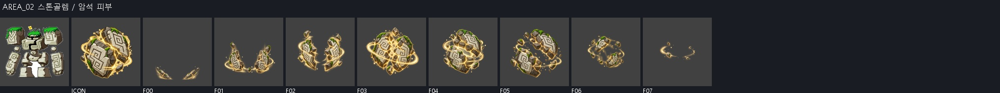
- 핵심 소재: 맞물린 암석 판 두 겹과 틈새에서 새는 흙빛 광선. ‘스톤골렘 / 암석 피부’ 전용 소재이며 몬스터 본체는 VFX에 직접 넣지 않음
- 진행 방향: 맞물린 암석 판 두 겹과 틈새에서 새는 흙빛 광선이 아래에서 위로 감싸며 1회 맥동한 뒤 같은 중심에서 소멸하고 화면을 횡단하지 않음
- 아이콘 핵심 모티브: 대표 실루엣 1개는 ‘겹친 바위판’, 보조 효과 1개는 ‘균열광’. 64px 축소에서도 두 형상의 겹침과 방향이 읽혀야 함
- VFX: 8 frames, 각 256×256 RGBA PNG, 약 0.10 sec/frame
유지 가능 — 도끼날 호와 나무 파편, 타격광이 읽힌다. 전방 공격형 효과로 기능하며 ICON과 소재 일치.
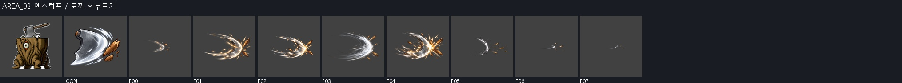
- 핵심 소재: 도끼날 실루엣의 짧고 무거운 전방 궤적과 나무 부스러기. ‘엑스텀프 / 도끼 휘두르기’ 전용 소재이며 몬스터 본체는 VFX에 직접 넣지 않음
- 진행 방향: 도끼날 실루엣의 짧고 무거운 전방 궤적과 나무 부스러기이 오른쪽으로 압축·가속하고 충돌점에서 짧게 넓어진 뒤 반대 방향 파편 없이 소멸
- 아이콘 핵심 모티브: 대표 실루엣 1개는 ‘도끼날 호’, 보조 효과 1개는 ‘나무 파편’. 64px 축소에서도 두 형상의 겹침과 방향이 읽혀야 함
- VFX: 8 frames, 각 384×384 RGBA PNG, 약 0.10 sec/frame
보정 권장 — 검은 목질 뿌리·보라 코어는 적합. F02의 높은 뿌리가 F03에서 낮아졌다 F04에서 다시 커져 한 번의 성장보다 재출현처럼 보일 수 있음. 형상 전개 연결을 다듬을 것을 권장.
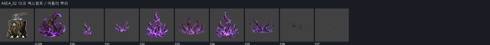
- 핵심 소재: 지면을 찢고 솟는 검은 뿌리 갈퀴와 보랏빛 흙먼지. ‘다크 엑스텀프 / 어둠의 뿌리’ 전용 소재이며 몬스터 본체는 VFX에 직접 넣지 않음
- 진행 방향: 지면을 찢고 솟는 검은 뿌리 갈퀴와 보랏빛 흙먼지이 중심에서 방사 또는 수직으로 확장하고 절정 뒤 파편은 원점으로 되감기지 않음
- 아이콘 핵심 모티브: 대표 실루엣 1개는 ‘검은 뿌리 갈퀴’, 보조 효과 1개는 ‘보라 흙먼지’. 64px 축소에서도 두 형상의 겹침과 방향이 읽혀야 함
- VFX: 8 frames, 각 384×384 RGBA PNG, 약 0.10 sec/frame
수정 필요 — F01은 날카로운 선두가 왼쪽, 잔상이 오른쪽이다. F00/F02~F04의 우측 전개 및 INPUT 우측 기준과 충돌. 해당 방향 연결을 고친 뒤 전체 돌진 흐름 재검증 필요. 전체 Area 재제작 사유는 아님.
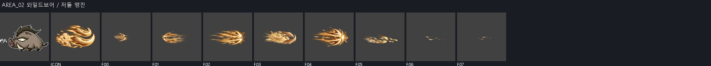
- 핵심 소재: 멧돼지 어금니를 닮은 두 갈래 전방 압축선과 흙먼지. ‘와일드보어 / 저돌 맹진’ 전용 소재이며 몬스터 본체는 VFX에 직접 넣지 않음
- 진행 방향: 멧돼지 어금니를 닮은 두 갈래 전방 압축선과 흙먼지이 오른쪽으로 압축·가속하고 충돌점에서 짧게 넓어진 뒤 반대 방향 파편 없이 소멸
- 아이콘 핵심 모티브: 대표 실루엣 1개는 ‘쌍 어금니’, 보조 효과 1개는 ‘돌진 흙먼지’. 64px 축소에서도 두 형상의 겹침과 방향이 읽혀야 함
- VFX: 8 frames, 각 256×256 RGBA PNG, 약 0.10 sec/frame
유지 가능 — 비스듬히 솟는 뼈와 흙 파편이 순서대로 성장/해체된다. 물질형 스킬로 읽히며 모든 재질을 강한 발광으로 바꾸지 않은 점이 타당.
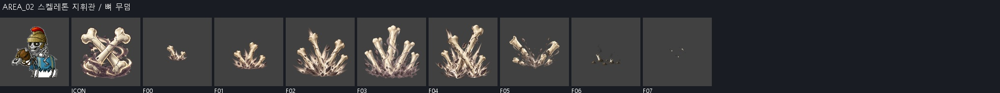
- 핵심 소재: 지면에서 비스듬히 솟는 뼈기둥과 묘지 흙 파편. ‘스켈레톤 지휘관 / 뼈 무덤’ 전용 소재이며 몬스터 본체는 VFX에 직접 넣지 않음
- 진행 방향: 지면에서 비스듬히 솟는 뼈기둥과 묘지 흙 파편이 중심에서 방사 또는 수직으로 확장하고 절정 뒤 파편은 원점으로 되감기지 않음
- 아이콘 핵심 모티브: 대표 실루엣 1개는 ‘교차한 뼈기둥’, 보조 효과 1개는 ‘묘지 흙’. 64px 축소에서도 두 형상의 겹침과 방향이 읽혀야 함
- VFX: 8 frames, 각 384×384 RGBA PNG, 약 0.10 sec/frame
유지 가능 — 낮은 불꽃 혀·밝은 코어·전방 불티가 명확하다. 오비탈 플레임의 외곽/코어 대비와 해체 원리를 유지하면서 원형 룬을 복제하지 않음.
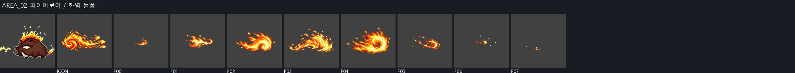
- 핵심 소재: 낮게 휘는 불꽃 혀와 돌진 방향으로 흩는 불티. ‘파이어보어 / 화염 돌풍’ 전용 소재이며 몬스터 본체는 VFX에 직접 넣지 않음
- 진행 방향: 낮게 휘는 불꽃 혀와 돌진 방향으로 흩는 불티의 고유 결을 따라 한 번 확장·수축하며 불필요한 화면 횡단은 하지 않음
- 아이콘 핵심 모티브: 대표 실루엣 1개는 ‘불꽃 혀’, 보조 효과 1개는 ‘전방 불티’. 64px 축소에서도 두 형상의 겹침과 방향이 읽혀야 함
- VFX: 8 frames, 각 384×384 RGBA PNG, 약 0.10 sec/frame
유지 가능 — 나이테·새싹·연두 에너지탄과 좌측 잔상이 명세를 따른다. 몸체 확대만 있는 것이 아니라 압축과 후반 파편 전환이 존재. 실제 게임 발사 이동은 미검증.
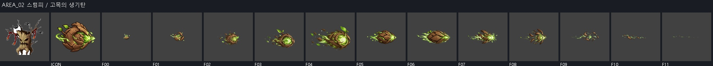
- 핵심 소재: 고목 나이테에서 싹이 돋아 에너지 씨앗으로 압축되는 탄. ‘스텀피 / 고목의 생기탄’ 전용 소재이며 몬스터 본체는 VFX에 직접 넣지 않음
- 진행 방향: 고목 나이테에서 싹이 돋아 에너지 씨앗으로 압축되는 탄이 오른쪽 한 방향으로 이동하고 꼬리·잔상은 발사점 쪽에만 남김
- 아이콘 핵심 모티브: 대표 실루엣 1개는 ‘싹튼 나이테’, 보조 효과 1개는 ‘생기탄’. 64px 축소에서도 두 형상의 겹침과 방향이 읽혀야 함
- VFX: 12 frames, 각 512×512 RGBA PNG, 약 0.08 sec/frame
유지 가능 — 점액 신장·튀김·방울 해체가 읽히며 기존 AREA00과 같은 소재 언어. F07 재응집은 기존 판단 항목; 마지막 완전 소멸은 확인하지 않음.
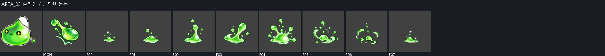
- 핵심 소재: 탄성 있는 점액 방울과 눌렸다 되튀는 젤리 테두리. ‘슬라임 / 끈적한 몸통’ 전용 소재이며 몬스터 본체는 VFX에 직접 넣지 않음
- 진행 방향: 탄성 있는 점액 방울과 눌렸다 되튀는 젤리 테두리의 고유 결을 따라 한 번 확장·수축하며 불필요한 화면 횡단은 하지 않음
- 아이콘 핵심 모티브: 대표 실루엣 1개는 ‘점액 방울’, 보조 효과 1개는 ‘탄성 튐선’. 64px 축소에서도 두 형상의 겹침과 방향이 읽혀야 함
- VFX: 8 frames, 각 256×256 RGBA PNG, 약 0.10 sec/frame
유지 가능 — 나이테 방패·버팀 뿌리와 분리되는 파편이 명세를 따른다. 목질 중간톤이 남아 황금광 단일 덩어리로 뭉개지지 않음.
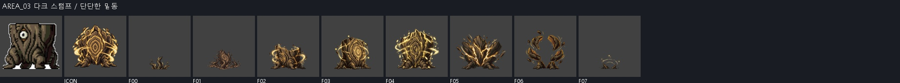
- 핵심 소재: 검게 굳은 나이테 방패와 땅에 박힌 짧은 뿌리. ‘다크 스텀프 / 단단한 밑동’ 전용 소재이며 몬스터 본체는 VFX에 직접 넣지 않음
- 진행 방향: 검게 굳은 나이테 방패와 땅에 박힌 짧은 뿌리이 아래에서 위로 감싸며 1회 맥동한 뒤 같은 중심에서 소멸하고 화면을 횡단하지 않음
- 아이콘 핵심 모티브: 대표 실루엣 1개는 ‘굵은 나이테’, 보조 효과 1개는 ‘버팀 뿌리’. 64px 축소에서도 두 형상의 겹침과 방향이 읽혀야 함
- VFX: 8 frames, 각 256×256 RGBA PNG, 약 0.10 sec/frame
유지 가능 — 큰 기포·작은 거품 고리가 ICON에서 읽히고 청색 젤리 몬스터와 연결됨. 패시브 ICON-only를 정상으로 처리.
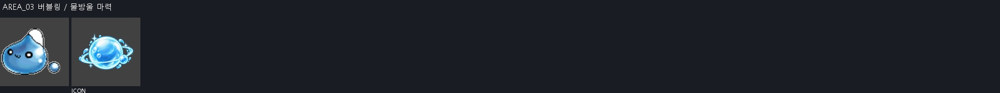
- 핵심 소재: 마력빛 큰 기포 하나와 주변을 도는 작은 거품 고리. ‘버블링 / 물방울 마력’ 전용 소재이며 몬스터 본체는 VFX에 직접 넣지 않음
- 진행 방향: 마력빛 큰 기포 하나와 주변을 도는 작은 거품 고리의 대표 결만 바깥으로 8~15% 맥동하고 이동 궤적은 만들지 않음
- 아이콘 핵심 모티브: 대표 실루엣 1개는 ‘큰 마력 기포’, 보조 효과 1개는 ‘작은 거품 고리’. 64px 축소에서도 두 형상의 겹침과 방향이 읽혀야 함
- VFX: 6 frames, 각 256×256 RGBA PNG, 약 0.10 sec/frame
보정 권장 — 별가루/날개빛/나선 전개는 적합. 8프레임 모두 캔버스 끝에 alpha=1 잔류가 있음. 주요 형상 절단은 아니며 원화 재제작 없이 극미약 배경 잔류 정리 권장.
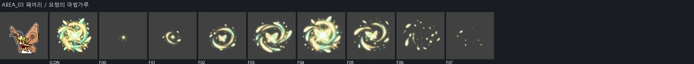
- 핵심 소재: 별가루 같은 요정 분말이 나선으로 모였다 퍼지는 빛무리. ‘페어리 / 요정의 마법가루’ 전용 소재이며 몬스터 본체는 VFX에 직접 넣지 않음
- 진행 방향: 별가루 같은 요정 분말이 나선으로 모였다 퍼지는 빛무리의 고유 결을 따라 한 번 확장·수축하며 불필요한 화면 횡단은 하지 않음
- 아이콘 핵심 모티브: 대표 실루엣 1개는 ‘별가루 나선’, 보조 효과 1개는 ‘작은 날개빛’. 64px 축소에서도 두 형상의 겹침과 방향이 읽혀야 함
- VFX: 8 frames, 각 384×384 RGBA PNG, 약 0.10 sec/frame
유지 가능 — 실로 묶인 인형 표식·자주색 침·충격광이 함께 읽힌다. 커스 마크/포이즌 니들의 날카로운 타격 대비를 모티브 복제 없이 반영. 파우스트 본체 직접 삽입 없음.
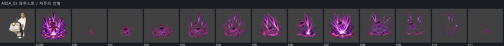
- 핵심 소재: 실로 묶인 인형 표식과 아래로 떨어지는 자주색 저주 침. ‘파우스트 / 저주의 인형’ 전용 소재이며 몬스터 본체는 VFX에 직접 넣지 않음
- 진행 방향: 실로 묶인 인형 표식과 아래로 떨어지는 자주색 저주 침의 고유 결을 따라 한 번 확장·수축하며 불필요한 화면 횡단은 하지 않음
- 아이콘 핵심 모티브: 대표 실루엣 1개는 ‘실 묶인 인형 표식’, 보조 효과 1개는 ‘저주 침’. 64px 축소에서도 두 형상의 겹침과 방향이 읽혀야 함
- VFX: 12 frames, 각 512×512 RGBA PNG, 약 0.08 sec/frame
유지 가능 — 먹물의 어두운 몸통·반사광·분리 방울이 확인된다. 꽃잎형 방사 얼룩은 INPUT 자체 지시이며 불필요한 취향 수정 대상으로 보지 않음.
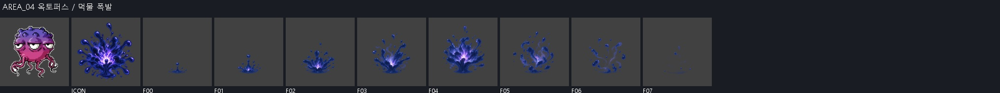
- 핵심 소재: 검푸른 먹물 방울이 불규칙 꽃잎처럼 터지는 얼룩. ‘옥토퍼스 / 먹물 폭발’ 전용 소재이며 몬스터 본체는 VFX에 직접 넣지 않음
- 진행 방향: 검푸른 먹물 방울이 불규칙 꽃잎처럼 터지는 얼룩이 중심에서 방사 또는 수직으로 확장하고 절정 뒤 파편은 원점으로 되감기지 않음
- 아이콘 핵심 모티브: 대표 실루엣 1개는 ‘먹물 방울’, 보조 효과 1개는 ‘방사 얼룩’. 64px 축소에서도 두 형상의 겹침과 방향이 읽혀야 함
- VFX: 8 frames, 각 384×384 RGBA PNG, 약 0.10 sec/frame
유지 가능 — 얇은 야간 파문과 붉은 감지점이 ICON에서 구분된다. 감각 패시브의 추상 표식으로 타당.
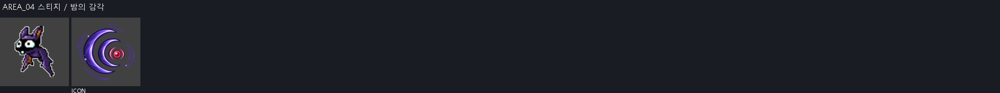
- 핵심 소재: 박쥐 초음파 같은 얇은 야간 파문과 붉은 감지점. ‘스티지 / 밤의 감각’ 전용 소재이며 몬스터 본체는 VFX에 직접 넣지 않음
- 진행 방향: 박쥐 초음파 같은 얇은 야간 파문과 붉은 감지점의 대표 결만 바깥으로 8~15% 맥동하고 이동 궤적은 만들지 않음
- 아이콘 핵심 모티브: 대표 실루엣 1개는 ‘초음파 파문’, 보조 효과 1개는 ‘붉은 감지점’. 64px 축소에서도 두 형상의 겹침과 방향이 읽혀야 함
- VFX: 6 frames, 각 256×256 RGBA PNG, 약 0.10 sec/frame
수정 필요 — F00~F03 하단 형상이 같은 수평선에서 끊긴다. F04~F07 상단에 수평으로 잘린 독립 고리 조각이 남는다. 실제 ZIP PNG에서도 확인. 분할 경계 오류 의심이나 생성 시트/분할 기록 원인 추적은 이번에 미실시. 원본 재추출 우선 검토.
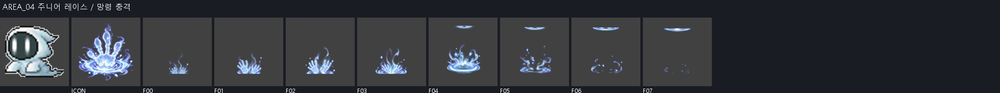
- 핵심 소재: 반투명 망령 손자국이 순간 겹치며 터지는 냉기 충격. ‘주니어 레이스 / 망령 충격’ 전용 소재이며 몬스터 본체는 VFX에 직접 넣지 않음
- 진행 방향: 반투명 망령 손자국이 순간 겹치며 터지는 냉기 충격이 중심에서 방사 또는 수직으로 확장하고 절정 뒤 파편은 원점으로 되감기지 않음
- 아이콘 핵심 모티브: 대표 실루엣 1개는 ‘망령 손자국’, 보조 효과 1개는 ‘냉기 충격륜’. 64px 축소에서도 두 형상의 겹침과 방향이 읽혀야 함
- VFX: 8 frames, 각 384×384 RGBA PNG, 약 0.10 sec/frame
유지 가능 — 휘어진 혼령 띠·내부 불씨와 반투명 농도 변화가 읽힌다. 청록색 혼령 소재를 보존하며 ICON-only로 적합.
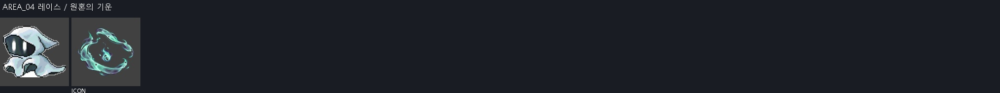
- 핵심 소재: 휘어진 혼령 띠와 안쪽을 도는 작은 원혼 불씨. ‘레이스 / 원혼의 기운’ 전용 소재이며 몬스터 본체는 VFX에 직접 넣지 않음
- 진행 방향: 휘어진 혼령 띠와 안쪽을 도는 작은 원혼 불씨의 대표 결만 바깥으로 8~15% 맥동하고 이동 궤적은 만들지 않음
- 아이콘 핵심 모티브: 대표 실루엣 1개는 ‘혼령 띠’, 보조 효과 1개는 ‘원혼 불씨’. 64px 축소에서도 두 형상의 겹침과 방향이 읽혀야 함
- VFX: 6 frames, 각 256×256 RGBA PNG, 약 0.10 sec/frame
유지 가능 — 중앙이 어둡고 가장자리만 보라빛인 장막이 성장 후 소멸한다. 빛을 삼키는 명세에 맞으므로 다른 공격처럼 중앙 흰 코어를 강제하지 않음. ICON 초승달 역시 명세에 명시됨.
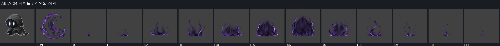
- 핵심 소재: 빛을 삼키는 반투명 장막과 가장자리의 보랏빛 잔광. ‘셰이드 / 심연의 장막’ 전용 소재이며 몬스터 본체는 VFX에 직접 넣지 않음
- 진행 방향: 빛을 삼키는 반투명 장막과 가장자리의 보랏빛 잔광의 고유 결을 따라 한 번 확장·수축하며 불필요한 화면 횡단은 하지 않음
- 아이콘 핵심 모티브: 대표 실루엣 1개는 ‘검은 장막 초승달’, 보조 효과 1개는 ‘보라 테두리’. 64px 축소에서도 두 형상의 겹침과 방향이 읽혀야 함
- VFX: 12 frames, 각 512×512 RGBA PNG, 약 0.08 sec/frame
유지 가능 — 매듭→전방 리본 궤적→타격→분해가 구별된다. 분홍 천의 명암 면과 밝은 충돌광이 나뉘며 포스터형 고정 구성에 머물지 않음.
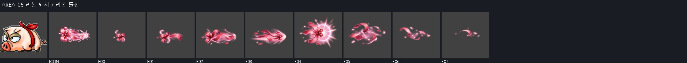
- 핵심 소재: 분홍 리본 매듭이 전방으로 길게 풀리는 돌진 궤적. ‘리본 돼지 / 리본 돌진’ 전용 소재이며 몬스터 본체는 VFX에 직접 넣지 않음
- 진행 방향: 분홍 리본 매듭이 전방으로 길게 풀리는 돌진 궤적이 오른쪽으로 압축·가속하고 충돌점에서 짧게 넓어진 뒤 반대 방향 파편 없이 소멸
- 아이콘 핵심 모티브: 대표 실루엣 1개는 ‘분홍 리본 매듭’, 보조 효과 1개는 ‘전방 잔상’. 64px 축소에서도 두 형상의 겹침과 방향이 읽혀야 함
- VFX: 8 frames, 각 384×384 RGBA PNG, 약 0.10 sec/frame
유지 가능 — 푸른 리본 매듭·조임 고리와 단정한 반사광으로 패시브를 식별할 수 있음. 몬스터의 리본색/소재와 연결됨.
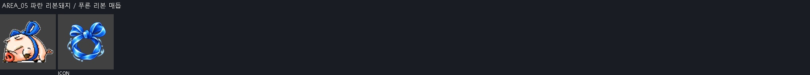
- 핵심 소재: 푸른 리본 매듭이 겹겹이 조여드는 원형 결속광. ‘파란 리본돼지 / 푸른 리본 매듭’ 전용 소재이며 몬스터 본체는 VFX에 직접 넣지 않음
- 진행 방향: 푸른 리본 매듭이 겹겹이 조여드는 원형 결속광의 대표 결만 바깥으로 8~15% 맥동하고 이동 궤적은 만들지 않음
- 아이콘 핵심 모티브: 대표 실루엣 1개는 ‘푸른 리본 매듭’, 보조 효과 1개는 ‘조임 고리’. 64px 축소에서도 두 형상의 겹침과 방향이 읽혀야 함
- VFX: 6 frames, 각 256×256 RGBA PNG, 약 0.10 sec/frame
유지 가능 — 다섯 갈래 주황 가시와 청록 회전 잔상이 출현/성장/분해된다. 소울 시커/너울이는 강의 곡선·파편 원리를 사용하며 몬스터 별 몸체를 직접 넣지 않음.
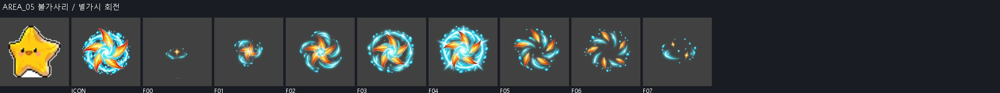
- 핵심 소재: 별 모양 가시가 회전하며 남기는 다섯 갈래 수중 잔상. ‘불가사리 / 별가시 회전’ 전용 소재이며 몬스터 본체는 VFX에 직접 넣지 않음
- 진행 방향: 별 모양 가시가 회전하며 남기는 다섯 갈래 수중 잔상이 중심에서 방사 또는 수직으로 확장하고 절정 뒤 파편은 원점으로 되감기지 않음
- 아이콘 핵심 모티브: 대표 실루엣 1개는 ‘회전 별가시’, 보조 효과 1개는 ‘물결 잔상’. 64px 축소에서도 두 형상의 겹침과 방향이 읽혀야 함
- VFX: 8 frames, 각 384×384 RGBA PNG, 약 0.10 sec/frame
보정 권장 — 젤리 방울은 적합하지만 ICON의 서리 특성이 약해 보통 물방울과 구분이 약함. 작은 서리 면/차가운 가장자리만 보강 권장. 해파리 본체 삽입이나 전면 재생성은 불필요.
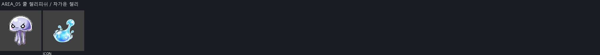
- 핵심 소재: 차가운 젤리 방울이 늘어졌다 튀며 남기는 서리 테두리. ‘쿨 젤리피쉬 / 차가운 젤리’ 전용 소재이며 몬스터 본체는 VFX에 직접 넣지 않음
- 진행 방향: 차가운 젤리 방울이 늘어졌다 튀며 남기는 서리 테두리의 대표 결만 바깥으로 8~15% 맥동하고 이동 궤적은 만들지 않음
- 아이콘 핵심 모티브: 대표 실루엣 1개는 ‘젤리 방울’, 보조 효과 1개는 ‘서리 튐’. 64px 축소에서도 두 형상의 겹침과 방향이 읽혀야 함
- VFX: 6 frames, 각 256×256 RGBA PNG, 약 0.10 sec/frame
보정 권장 — 갑각 면·파도 코어·분해는 완성도가 있다. 다만 F02~F07이 집게 닫힘보다 대칭 구도 확대와 파도 성장으로 읽혀 명세의 닫히는 타격을 더 명확히 할 필요가 있음. 붉은 집게는 INPUT 지정색이며 UUID 몬스터의 청색 갑각과 다른 점은 명세 재판단 항목.
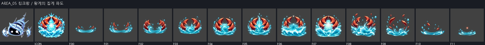
- 핵심 소재: 왕게 집게 두 개가 닫히며 밀어내는 넓은 파도턱. ‘킹크랑 / 왕게의 집게 파도’ 전용 소재이며 몬스터 본체는 VFX에 직접 넣지 않음
- 진행 방향: 왕게 집게 두 개가 닫히며 밀어내는 넓은 파도턱의 고유 결을 따라 한 번 확장·수축하며 불필요한 화면 횡단은 하지 않음
- 아이콘 핵심 모티브: 대표 실루엣 1개는 ‘왕관 집게’, 보조 효과 1개는 ‘파도턱’. 64px 축소에서도 두 형상의 겹침과 방향이 읽혀야 함
- VFX: 12 frames, 각 512×512 RGBA PNG, 약 0.08 sec/frame